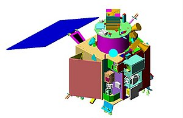

Chandrayaan-1 transl. Moon-craft, pronunciation was the first Indian lunar probe under the Chandrayaan program. It was launched by the Indian Space Research Organisation (ISRO) in October 2008, and operated until August 2009. The mission included a lunar orbiter and an impactor. India launched the spacecraft using a PSLV-XL rocket on 22 October 2008 at 00:52 UTC from Satish Dhawan Space Centre, at Sriharikota, Andhra Pradesh.The mission was a major boost to India's space program, as India researched and developed indigenous technology to explore the Moon. The vehicle was inserted into lunar orbit on 8 November 2008